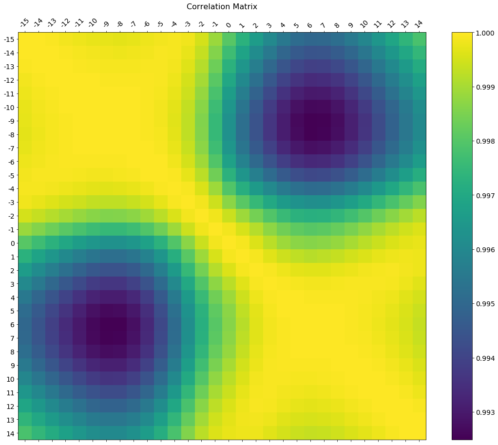
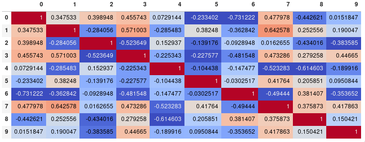
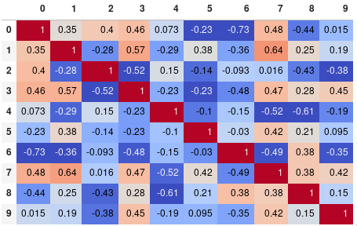
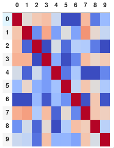
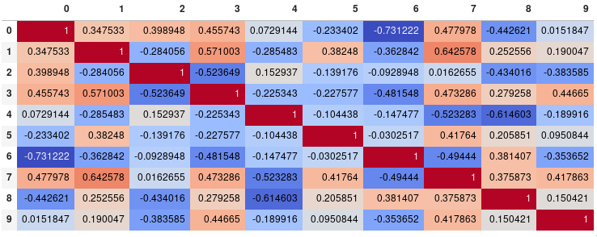
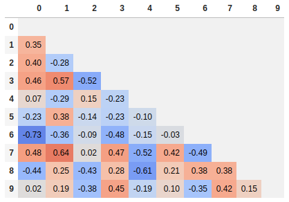

Plot correlation matrix using pandas
I have a data set with huge number of features, so analysing the correlation
matrix has become very difficult. I want to plot a correlation matrix which we
get using dataframe.corr() function from pandas library. Is there any built-
in function provided by the pandas library to plot this matrix?
Answer
You can use pyplot.matshow() from matplotlib:
import matplotlib.pyplot as plt plt.matshow(dataframe.corr()) plt.show()
Edit:
In the comments was a request for how to change the axis tick labels. Here's a deluxe version that is drawn on a bigger figure size, has axis labels to match the dataframe, and a colorbar legend to interpret the color scale.
I'm including how to adjust the size and rotation of the labels, and I'm using a figure ratio that makes the colorbar and the main figure come out the same height.
EDIT 2: As the df.corr() method ignores non-numerical columns,
.select_dtypes(['number']) should be used when defining the x and y labels
to avoid an unwanted shift of the labels (included in the code below).
f = plt.figure(figsize=(19, 15))
plt.matshow(df.corr(), fignum=f.number)
plt.xticks(range(df.select_dtypes(['number']).shape[1]), df.select_dtypes(['number']).columns, fontsize=14, rotation=45)
plt.yticks(range(df.select_dtypes(['number']).shape[1]), df.select_dtypes(['number']).columns, fontsize=14)
cb = plt.colorbar()
cb.ax.tick_params(labelsize=14)
plt.title('Correlation Matrix', fontsize=16);

Suggest
If your main goal is to visualize the correlation matrix, rather than creating
a plot per se, the convenient pandas styling options is a viable built-in
solution:
import pandas as pd import numpy as np rs = np.random.RandomState(0) df = pd.DataFrame(rs.rand(10, 10)) corr = df.corr() corr.style.background_gradient(cmap='coolwarm') # 'RdBu_r', 'BrBG_r', & PuOr_r are other good diverging colormaps

Note that this needs to be in a backend that supports rendering HTML, such as the JupyterLab Notebook.
Styling
You can easily limit the digit precision:
corr.style.background_gradient(cmap='coolwarm').set_precision(2)

Or get rid of the digits altogether if you prefer the matrix without annotations:
corr.style.background_gradient(cmap='coolwarm').set_properties(**{'font-size': '0pt'})

The styling documentation also includes instructions of more advanced styles, such as how to change the display of the cell the mouse pointer is hovering over.
Time comparison
In my testing, style.background_gradient() was 4x faster than
plt.matshow() and 120x faster than sns.heatmap() with a 10x10 matrix.
Unfortunately it doesn't scale as well as plt.matshow(): the two take about
the same time for a 100x100 matrix, and plt.matshow() is 10x faster for a
1000x1000 matrix.
Saving
There are a few possible ways to save the stylized dataframe:
- Return the HTML by appending the
render()method and then write the output to a file. - Save as an
.xslxfile with conditional formatting by appending theto_excel()method. - Combine with imgkit to save a bitmap
- Take a screenshot (like I have done here).
Normalize colors across the entire matrix (pandas >= 0.24)
By setting axis=None, it is now possible to compute the colors based on the
entire matrix rather than per column or per row:
corr.style.background_gradient(cmap='coolwarm', axis=None)

Single corner heatmap
Since many people are reading this answer I thought I would add a tip for how to only show one corner of the correlation matrix. I find this easier to read myself, since it removes the redundant information.
# Fill diagonal and upper half with NaNs mask = np.zeros_like(corr, dtype=bool) mask[np.triu_indices_from(mask)] = True corr[mask] = np.nan (corr .style .background_gradient(cmap='coolwarm', axis=None, vmin=-1, vmax=1) .highlight_null(color='#f1f1f1') # Color NaNs grey .format(precision=2))
